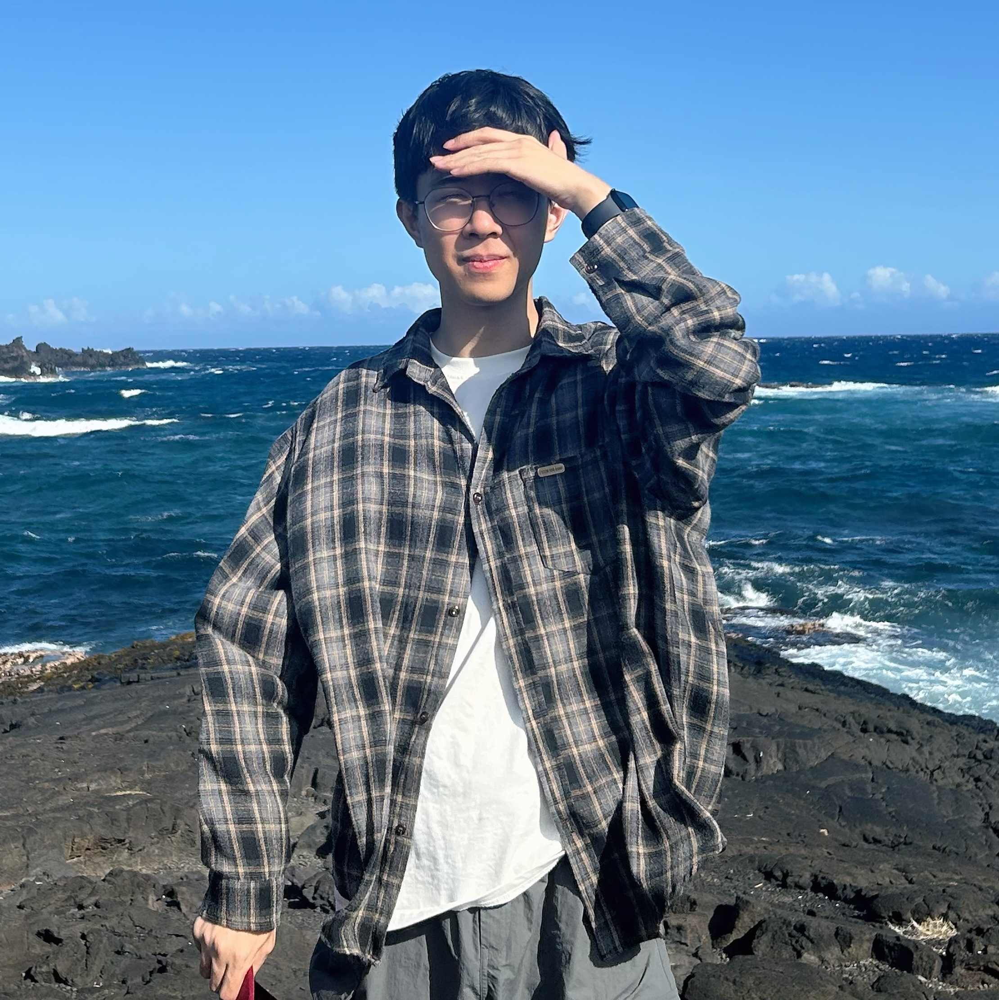

Zeqiang Lai 赖泽强
I’m a PhD student at MMLab, CUHK, advised by Xiangyu Yue.
I build scalable generative models for high-fidelity multimodal content creation, with a current focus on 3D. My recent work contributes to the Hunyuan3D series at Tencent Hunyuan.